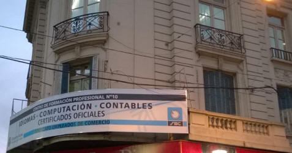

Nuestra Historia
Queremos contarte porqué estudiar en el Anexo Flores del SEC es
importante, nuestra trayectoria y la pertenencia al Centro de
Capacitación Profesional Nº 10, "Raúl Scalabrini Ortiz", revelan una
historia que te identificará.
Las necesidades educativas de los trabajadores y las propuestas de
nuestro sistema de enseñanza, establecieron una relación jalonada de
acuerdos y contradicciones que reflejaron características políticas,
sociales y económicas de cada tiempo, pero, con condicionantes
ideológicos.
El movimiento obrero mundial ha desarrollado actividades educativas
cuyas dos principales objetivos fueron: la preparación para el mundo
del trabajo y la formación de cuadros sindicales que lo nutriera y
fortalecieran. Este contexto general se tratará en un apartado de
este Sitio.
Históricamente
El SEC nace en 1919 por decisión de algunos empleados de las tiendas
comerciales como Harrods y Gath y Chávez, etc.,.
La primer función social vestirá el ropaje del juego: bochas,
sapo, truco, el baile de los sábados en el club de la ciudad, es en
estas reuniones donde comienza a capacitarse al sobre y empleado
sobre recursos y leyes sociales.
En 1932 los empleados de comercio están suficientemente organizados
como para ganar la calle y hacer valer sus derechos.
La década del 50
En Junio de 1957 la Federación de Empleados de Comercio pone en
funcionamiento la Escuela de Capacitación Sindical, en Uruguay 317,
pero iniciará sus primeros cursos a principio del 58 dividiendo su
actividad en dos secciones: una técnica y otra de capacitación
sindical.
En la primera los afiliados cursaban en forma gratuita: idioma
inglés, taquigrafía, dactilografía, dibujo, contabilidad y otras
disciplinas técnicas que tienen que ver con el quehacer del
comercio.
El objetivo esencial de la escuela radicará en la sección de
capacitación sindical, preparando militantes y dirigentes a efectos
de proveer de la fortaleza del conocimiento y así conformar un
movimiento obrero organizado y sólido. Tenían como materias:
Historia del Movimiento Obrero, Geografía Económica Argentina,
Economía, Derecho Laboral y Psicología Aplicada al Trabajo.
Ante la experiencia fructífera al ciclo de 1959 se le incorpora
cursos de Historia Argentina y Principios de la Organización
Sindical.
La escuela pasa a tener un papel esencial que consiste en no
dejar al empleado de comercio librado a su propia suerte sino
ofrecerle un centro en donde la enseñanza respondiera a planes
metódicos y encontrar tanto en sus cursos como en su biblioteca y en
sus libros y trabajos internos editados por la escuela la
formación que necesita.
La década del 60
Se afianza a actividad y pasa a depender de la Secretaría de Prensa
y Cultura.
El alumnado crece entre 500 y 600 personas. La escuela que funciona
con 5 aulas con sus cursos técnicos tiene igual importancia que la
capacitación gremial de los empleados.
En los 70
Comienza la creación de la Escuela Secundaria para Adultos y los
primeros cursos de Computación. En 1973 se inauguran los cursos con
20 máquinas de perforación de IBM y 5 de verificación, se enseña
Lenguaje Asembler.
Se agrega Programación Cobol y prácticas de taller en ambas
áreas, los alumnos comienzan a hacer programas de aplicación y la
empresa IBM presta sus máquinas donde los alumnos probaban sus
programas en esos equipos.
Hacia 1977 y 1978 aparecen las primeras PC Texas, Commodore y Nec
en la escuela se adquiere una Commodore 128, y se alquila una
Burroughs, los programas se graban, se llevan y se procesan, se los
trae a la escuela para que los alumnos los prueben.
Un detalle anecdótico: en esa época los avisos de Clarín pedían
egresados de IBM o del SEC para ocupar puestos de trabajo en
diferentes empresas, el motivo radical era que el alumno que
cursaba la carrera de programación se recibía con un sistema
comercial en funcionamiento y perfectamente capacitado para ingresar
al mundo laboral.
Al pasar a Mitre el número de aulas era quince, con un piso
totalmente destinado a capacitación.
Por esos años se comparte el edificio con cursos dictados
específicamente para la mujer como Corte y Confección, Yoga,
Guitarra, Cotillón, Peluquería Maquillaje, Tejido en Telar y
Cerámica, que no dependen de la secretaría de prensa en ese entonces
sino que se articulan desde la subsecretaría general. Todavía no
había un proyecto educativo integral. La escuela era un servicio más
del Sindicato.
La década del 80
El cambio de la década es rotundo, y comienzan los grandes
proyectos: Se crea la Mesa de Informática que agruparía todo
el sector homónimo dentro de Comercio. Se confecciona la cartilla
sanitaria generando una mesa de discusión entre sindicatos y
empresas dedicados al software y hardware a fin de limitar las horas
de trabajo y revisar los convenios colectivos.
A fines de la década y por requerimiento del CONET la escuela
comienza a dictar el curso de instructor, de ahí que los profesores
pasan de a ser instructores de formación profesional.
Hacia fines de 1988 se modifica el Estatuto del Sindicato y se
crean las nuevas secretarías entre ellas, la actual de Cultura
y Capacitación, mediante una reforma estructural y pedagógica
empieza el camino de todo lo que es informática y su
perfeccionamiento en forma masiva.
La década del `90
Desde 1990 en adelante se firma un convenio con el CONET y es
así que los títulos de carácter OFICIAL son otorgados por el Centro
de Formación Profesional Nº 10, "Raúl Scalabrini Ortiz", en 1992 el
CONET transfiere su estructura a la Municipalidad de la Ciudad de
Buenos Aires y la oficialización de los títulos es otorgada desde
entonces, por este organismo.
Por ello, es importante destacar en este espacio que TODOS los
TITULOS otorgados por la Escuela y los CENS son OFICIALES.
Descentralización: Los ANEXOS.
Para descentralizar la escuela se comienzan a dictar cursos en las
delegaciones gremiales que el sindicato tiene en los barrios o bien
en escuelas municipales con las que convenía previamente. Los ANEXOS
son una respuesta a la fuerte demanda de capacitación por parte de
los afiliados y de trabajadores en general. En esos años la apertura
de la economía junto a nuevas tecnologías generan una tendencia a
participar en cursos que den precisamente respuesta a esas
novedades, si bien la computadora fue una innovación, la apertura a
ella también diseñó una economía concentrada y destructora de
puestos de trabajo.
La primer delegación que abre el sindicato es la de Belgrano en
1973, ya funcionaba la secretaria de Organización con cursos de
gimnasia, modeladora etc., se cede un espacio a Prensa para dictar
Programación Cobol incorporándose otras áreas a lo largo de los 80,
en marzo de 1994 se dicta el secundario para adultos con orientación
en Perito Auxiliar en Informática. En los 90 los cursos se trasladan
al edificio que OSECAC tiene en Chacarita.
El anexo Flores es abierto en diciembre del 86, pero a mediados
del 90 incorpora los cursos e capacitación. Continuando con la línea
de la sede de Mitre dictará capacitación Sindical y los técnicos:
DOS, Wordstar, Lotus, Dbase, Sueldos, Leyes laborales e Inglés.
En la delegación se cuenta por entonces entre 40 y 50 alumnos,
pero la escuela se va construyendo a pulmón empezando con una
máquina pasando luego a tres, empleados de intendencia y de la
delegación acondicionan el edificio para levantar aulas, en 1991
pasan a Bacacay 2357, se siguen modificando espacios y las aulas
llegan a trece con un alumnado de egreso anual de 600 a 700
personas. Al tiempo, por necesidades edilicias se busca y alquila el
espacio actual de La Porteña con el mismo número y
llegando a un pico de 1200 alumnos egresados
Mientras tanto en Liniers comienzan a dictarse clases en 1989 de
Inglés, Cobol y Derecho Laboral, al año siguiente la Escuela
República Francesa cede espacios en la calle Montiel 150 y se
agregan los cursos de Auxiliar Contable.
A fines de 1990 se suma el secundario de Adultos Nº 5. Se reabre un
nuevo lugar en Ramón L. Falcón 6873 donde funciona hasta hoy.
Otro de los puntos es Pompeya inicialmente en una
escuela municipal y mas tarde en Almafuerte 765 la Secretaría de
Cultura ofrece con los cursos del área de informática contable e
idiomas, también secundario y primario para adultos. Luego por
medio de un convenio con el Gobierno de la Ciudad se reabren las
puertas en Saraza 470 funcionando hasta hoy un primario y
secundario para adultos.
Contínua labor en los '90
Comienzan a ingresar alumnos del público en general, hay un cambio
en la composición social.
Es la época de los grandes supermercados que modifica
sustancialmente el perfil de los trabajadores hacia quienes van
dirigidos los cursos, y también la línea de esos negocios que
respondían en los 70 y 80 a un tipo de comercio barrial y de
galerías que desaparece en los 90. El vendedor profesional cede su
espacio a una nueva clase de trabajo que se caracterizará por
emplear técnicas de venta mucho más rápidas e impersonales.
Al ritmo de los cambios mencionados se agregan cursos como:
Administración de Consorcios, Marketing de Servicios Profesionales
para el Administrador, Herramientas Informáticas de Gestión
Contable, Analista de Cuentas e Impuestos en el área contable;
Diseño Gráfico y Diseño asistido por Computadora, Procesamiento
Digital de Imágenes, Programación en Lenguaje Visual, Reparación de
computadoras personales, Auxiliar Técnico Informático, Confección de
Páginas Web y la actualización de los programas de los cursos de
operación de acuerdo a los productos en boga, en el área de
informática, inglés y portugués y otros cursos específicos en cada
área respectiva.
Asociada a las nuevas tecnologías de punta y la demandas de alumnos,
gracias a convenios con distintas entidades, se logra incorporar
cursos como: Robótica, Hidráulica, Electroneumática,
Mantenimiento de red de frío alimentario, Electricidad Básica y
otros en la sede de Rivadavia 1445.
|
|

Nuestros Centros de Estudio
Centro de Formación Profesional para Adolescentes:
Nace a partir de la firma de convenio con el CONET en 1990, de
acercamiento a la formación Profesional de Adolescentes que están
fuera del sistema educativo.
Se inicia en Mitre y se traslada luego a Rivadavia.
Además de necesitar una contención académica, se trabaja desde lo
afectivo y lo social.
Funciona en horario diurno después de dos años el adolescente que
ingresa con el primario completo tiene acceso al ciclo
Superior Técnico
CENS Nº 5 Centro Secundario para adultos:
Nace en 1973 con gente de la DINEA y se plantea un secundario para
adultos con perfil sindical. Funciona inicialmente en Mitre, la
mayoría de los alumnos son empleados de comercio que quieren
terminar su secundario, el título es el de Perito Mercantil con
Orientación en Administración de Empresas. Integrando el proyecto
educativo la apertura del CENS en Pompeya y Liniers se produce
por el 1992.
CENS Nº 62 Centro Secundario para Adultos:
Nace como un centro para ex-combatientes de Malvinas bajo el ámbito
del INAP, realidades posteriores hacen que el CENS pase a
depender del Sindicato y arranca en 1991, cambiando su modalidad y
se otorga el título de Perito Mercantil con Orientación en
Informática.
Hoy en el ámbito capitalino funcionan mas de 16 CENS que han
repetido la modalidad originada por profesores del Sindicato.
El CENT Nº 71, hoy CENS 19:
Para dar respuesta a la vocación de continuar estudios superiores
por parte de los egresados de nivel medio, se creó en acuerdo con la
Dirección Nacional de Educación del Adulto, DINEA, la carrera de
Técnico Superior en Administración Comercial, el diseño del plan de
estudios fue realizado por los equipos técnicos de la Secretaría de
Cultura y Capacitación del Sindicado, aprobados posteriormente por
el Ministerio de Educación.
En base a un convenio firmado con la Universidad de San Martín los
egresados de esta carrera pueden completar el nivel universitario
con dos años mas de estudios en la misma sede del gremio, alcanzando
el título de Licenciado en Administración y Gestión Empresarial.
El CENS Nº 8:
Creado a principios de 1983 en convenio con el Ministerio de trabajo
con clases en el edificio de calle Paraná, a principios de 1992 se
integra a las actividades educativas del Sindicato. Las clases se
dictan en el edificio de la escuela primaria General Paz, de Ramón
L. Falcón 2749 y luego a partir de 1998 se muda al edificio de
FAECYTS en Rivadavia 1447 donde funciona hasta hoy.
Este terciario otorga el título de Técnico Superior en Relaciones
Laborales. Desde fines de los 80 los alumnos egresados pueden
continuar sus estudios en la Universidad de la Marina Mercante por
un acuerdo tácito entre ambas instituciones
"Instituto Raúl Scalabrini Ortiz":
Se inicia en 1988 la modalidad de la carrera será Perito
Mercantil con Orientación en Computación, sus primeros alumnos eran
hijos de afiliados al sindicato.
En 1989 se firma un convenio con el Ministerio de Educación y en
1990 se logra la apertura de una carrera terciaria afín a la
estructura que tiene el Centro de Formación Profesional
especializado en el área de informática .
Con la adquisición la experiencia y de la estructura favorable del
terciario surge la posibilidad de una carrera a distancia contándose
con los requerimientos necesarios, el plantel docente y una
currícula similar a la de la carrera presencial.
CENT Técnico Superior en Economía Social y Desarrollo
Local:
La carrera es de nivel terciario y con una duración de tres
años. Se dicta en horario nocturno.
Gabinete Psicológico y Psicopedagógico:
En 1993 la Secretaría de Cultura continuando con su proyecto de
integración de las distintas áreas reúne en un Gabinete Psicológico
a personal idóneo que venía trabajando individualmente, con el
tiempo el mismo incrementa sus actividades y personas,
paulatinamente se traslada a los anexos.
El trabajo no se limita sólo a Formación Profesional sino que
interdisciplinariamente, abarca todas las áreas de la escuela:
secundario, terciario y centro de adolescentes. En 1998 se integra
el área para trabajar con personas con capacidades especiales.
Hoy el alumno de la escuela tiene atención psicológica individual
por problemática emocional o por dificultades de aprendizaje.
Orientación vocacional grupal.
Asesoramiento sobre problemáticas de asistencia social.
Grupos de reflexión sobre distintos temas de la Tercera Edad.
Grupos de apoyo en el aprendizaje para los alumnos de los CENS.
Diferentes talleres mensuales durante el ciclo lectivo con distintas
temáticas.
|